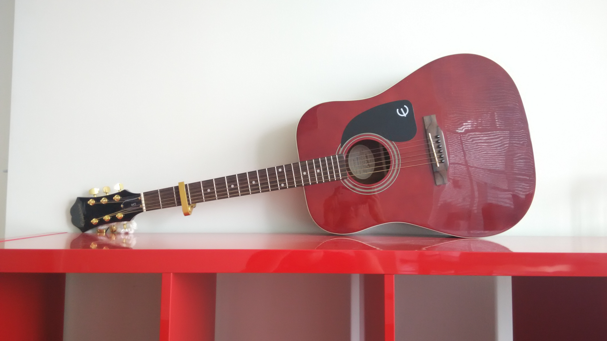
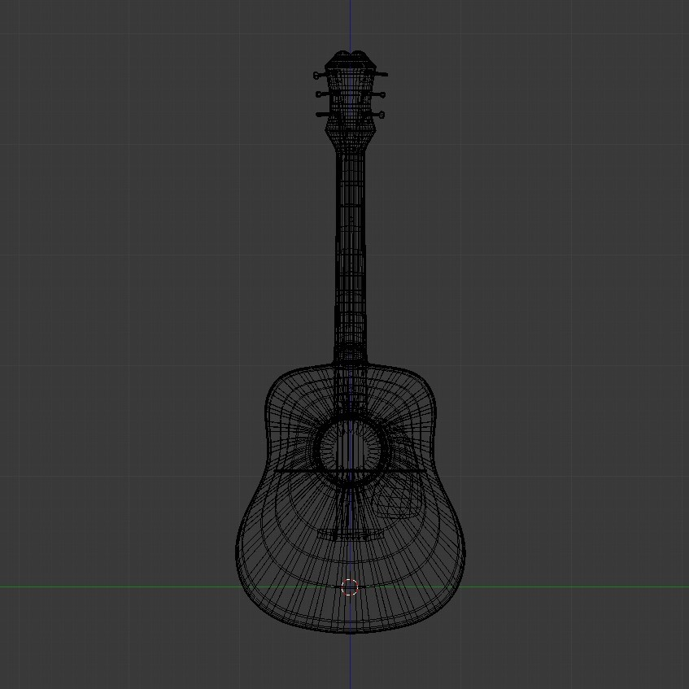

Guitar 3D model
Objective
This was a personal project where the only goals was to learn the intricacies that went into 3D design. I based this model off of a guitar I used to own.
Technologies
- Blender
Process
There were three main areas that I wanted to learn the basics of. 3D modelling, texturing, and lighting.
Remarks
The basic idea simple you just connect vertices until they make your desired shape, but there is a lot of effort that goes into making sure artifacts from the model don't show up in the final renders. The sides of the guitar needed to be smooth, while also not introducing an enormous amount of vertices, while there still needed to be crisp edges where the sides meet the face of the guitar. Overall it was a great challenge, and something I'm glad I learned. It gave me a great respect for people who work on movies.